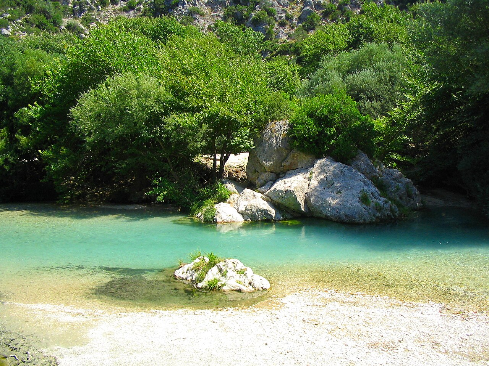

📍 Θεσπρωτία / Πρέβεζα, Ήπειρος | 📍 Μήκος: ~64χλμ.
✨ Μυθικός ποταμός της Ελλάδας με κρυστάλλινα, παγωμένα νερά & τοπίο εκπληκτικής φυσικής ομορφιάς.
- 🚣♂️ Κορυφαίος προορισμός για κολύμπι, River Trekking, Rafting, Καγιάκ & Ιππασία.
- 📸 Προσφέρει μοναδικές ευκαιρίες για Φωτογραφία Φυσικού Τοπίου & επιβλητικών Φαραγγιών.
- 🌿 Βρίσκεται σε ένα κατάφυτο Οικοσύστημα ιδιαίτερης οικολογικής σημασίας.
- 🏛️ Παγκοσμίως γνωστός από τη Μυθολογία ως ο ποταμός που οδηγούσε στον Κάτω Κόσμο.